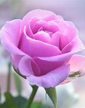

<center>
<font size=6>
In the garden of friendship, a flower blooms bright,
With petals soft as whispers, and colors pure delight.
<b>A friend like you</b>, dear, is a flower so rare,
Spreading joy and fragrance beyond compare.

<b>Your kindness blossoms like a rose at dawn</b>,
Each petal a reminder of the bond we've drawn.
In every bloom, I find your laughter's sweet trace,
A garden of memories, your friendship's embrace.

So here's to you, a flower in my life's bouquet,
With beauty that blooms in every thoughtful way.
In this garden of friendship, forever may you stay,
A cherished flower, lighting up each day.